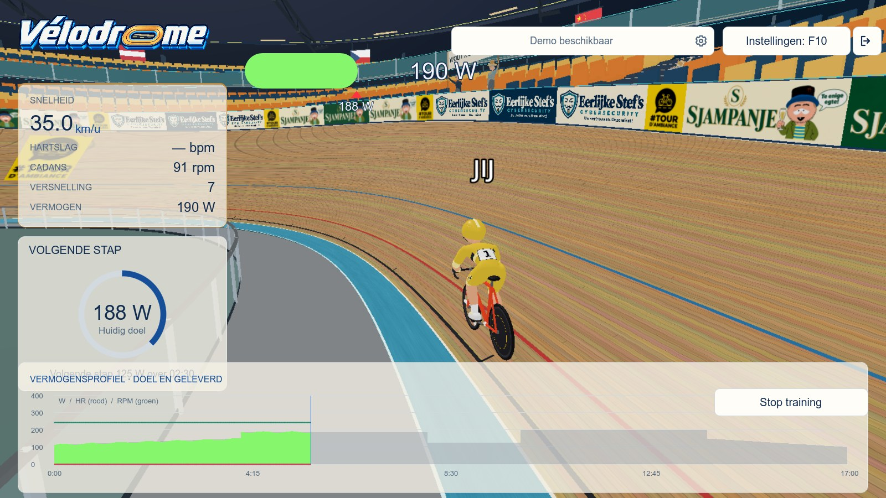
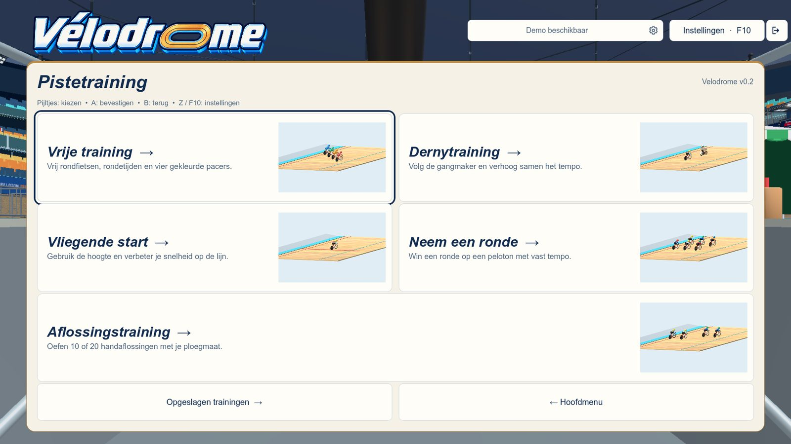
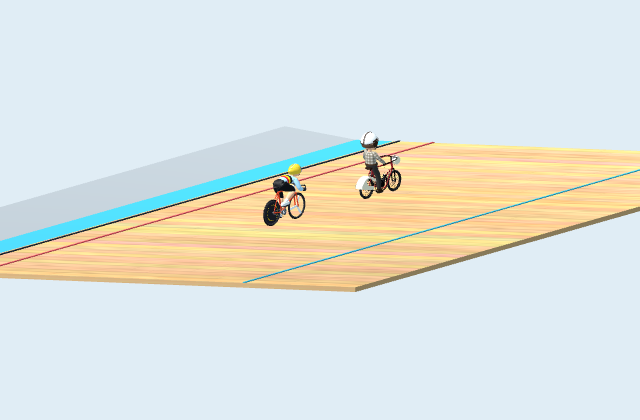
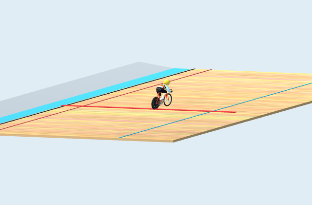

Vrije training
Vrij rondrijden met rondetijden en vier gekleurde pacers.
Twee soorten training: workouts op vermogen met je trainer in ERG, en oefeningen op de piste.
Bij ERG-training legt de trainer het vermogen op; jij trapt. Een echte trainer met verse vermogensmetingen is hiervoor nodig.
Vijf minuten vrij opwarmen, daarna start de ramp op 100 W en stijgt elke minuut met 20 W. Je stopt als het niet meer gaat. Je FTP is 75% van je beste 60 seconden en wordt in je spelersprofiel bewaard.
Beschikbaar op v0.3. Warm vijf minuten op en rijd daarna twintig minuten op het hoogste vermogen dat je gelijkmatig kunt volhouden. ERG staat uit. Je FTP is 95% van je gemiddelde gemeten vermogen over die twintig minuten.
Bouw workouts in de editor of importeer een .zwo-bestand. Filter je bibliotheek op duur en op intensiteit, als percentage van je FTP.


Al je trainingen worden bewaard en zijn later terug te zien onder Opgeslagen trainingen.
Vrij rondrijden met rondetijden en vier gekleurde pacers.

Volg de gangmaker en verhoog samen het tempo.

Gebruik de hoogte van de piste en verbeter je snelheid op de lijn.

Win een ronde op een peloton dat een vast tempo rijdt.

Oefen 10 of 20 handaflossingen met je ploegmaat.
Ritten kun je bewaren als CSV, TCX of FIT. Uploaden naar Strava is mogelijk, maar vraagt een eigen Strava-configuratie; zie de handleiding.